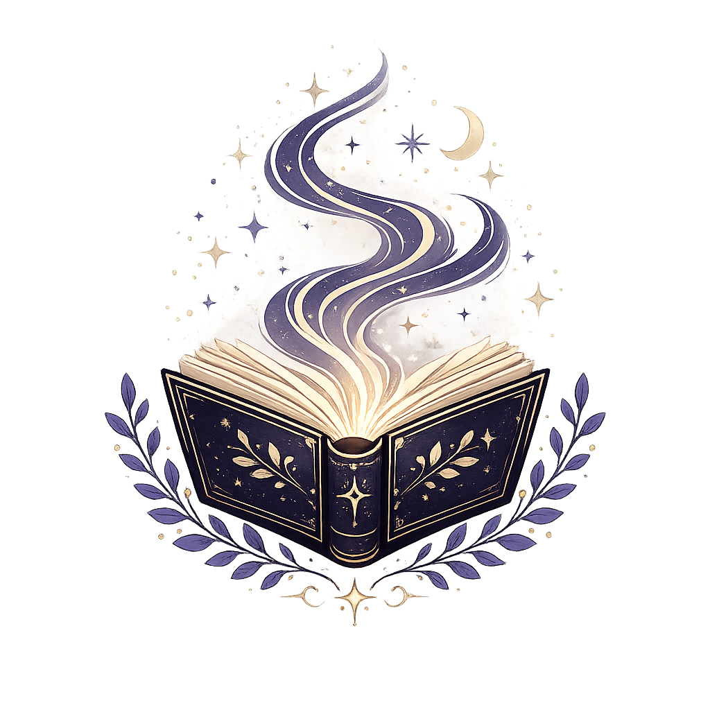
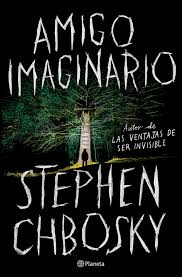
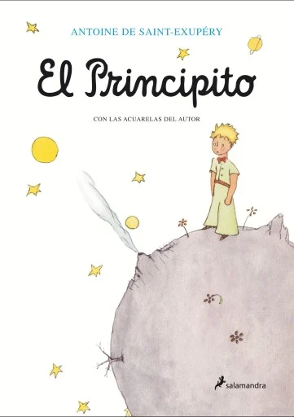
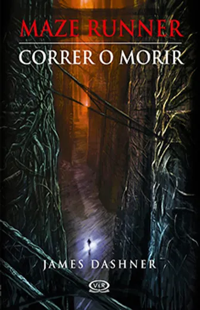
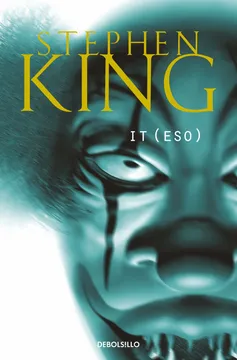
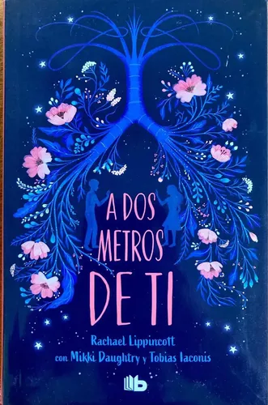
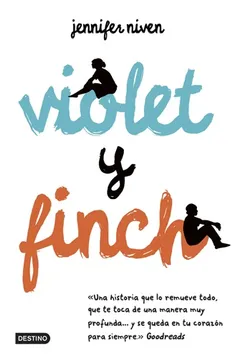

(1).jpg)
Percy Jackson y los dioses del Olimpo
★★★★★
“El libro que me hizo descubrir que amaba leer.”

Pequeñas opiniones sobre libros que dejaron huella en mí.
★★★★★
“El libro que me hizo descubrir que amaba leer.”
.webp)
★★★★★
“Una historia de amor y amistad que nunca voy a olvidar.”
 (1).jpg)
★★★★★
“Entendí por qué tantas personas aman este mundo.”
.jpg)
★★★★★
“Demostró que Percy Jackson podía ser aún más grande.”
.jpg)
★★★★★
“Una aventura que se siente épica cada vez”
.jpg)
★★★★★
"Una saga llena de aventuras, personajes inolvidables y un mundo al que siempre quiero volver."

★★★★☆
"Una historia inquietante que sigue dando vueltas en la cabeza."

★★★★☆
"Una historia hermosa y reflexiva que deja huella."

★★★☆☆
"Cada respuesta abre nuevos interrogantes y hace imposible dejar de leer."

★★★★★
"Mucho más que un libro de miedo: una historia sobre la amistad y enfrentar los propios temores."

★★★★☆
"Una historia tierna y dolorosa que demuestra que el amor puede sentirse incluso a la distancia."

★★★☆☆
"Una historia tan hermosa como dolorosa que permanece en la memoria mucho después de terminarla."
Ya conociste algunos de mis libros favoritos. Ahora me encantaría saber cuál historia te marcó a vos.
Gracias por dejar una pequeña huella en esta biblioteca.